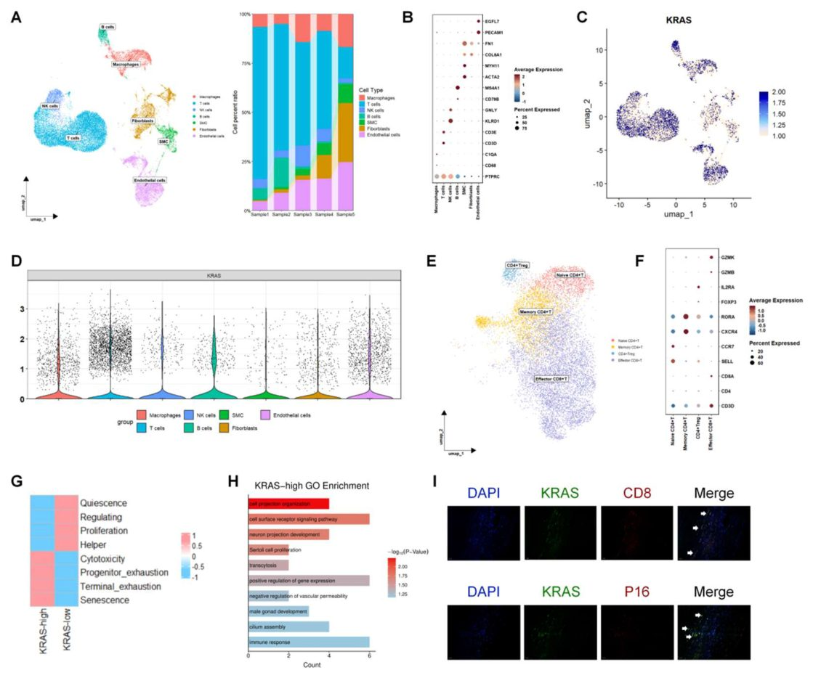

Иммунитеттің ерте қартаюы: KRAS ақуызы жүрек ауруларына қалай әсер етеді

Жүрек-қан тамыр аурулары жастар арасында жиілеп барады, бірақ оның нақты себептері әлі де зерттелуде. Жаңа зерттеу иммундық жасушаларда белсенетін KRAS ақуызының бұл процесте маңызды рөл атқаратынын көрсетеді. Оның артық мөлшері Т-лимфоциттердің мерзімінен бұрын қартаюына әкеліп, қан тамырларының қабынуын күшейтеді. Бұл жаңалық болашақта диагностика мен емдеудің жаңа әдістерін жасауға негіз бола алады.
Басты ойлар
- KRAS эффекторлық CD8+ Т-лимфоциттерінің қартаюын реттейтін негізгі фактор
- Т-жасушаларындағы KRAS-тың жоғары деңгейі атеросклероз ауырлығымен байланысты
- Виртуалды скрининг KRAS-қа бағытталған жаңа молекулаларды анықтады
Толығырақ
Зерттеушілер ерте коронарлық артерия ауруы (PCAD) бар науқастардың перифериялық қан мононуклеарлы жасушаларын (PBMC) талдады. Бір жасушалы РНК секвенирлеуі (scRNA-seq) арқылы KRAS генінің негізінен эффекторлық CD8+ Т-лимфоциттерінде аномальды түрде экспрессияланатыны анықталды. Бұл жасушалар қартаю белгілері мен жоғары цитотоксикалық қасиеттерді көрсетеді, бұл атеросклеротикалық бляшкалардың дамуына ықпал етеді.
KRAS-тың функционалдық маңыздылығын тексеру үшін авторлар виртуалды нокаут (in silico gene perturbation) алгоритмін қолданды, ол генді басу жасушаның жою жолдарын айтарлықтай өзгертетінін көрсетті. Молекулалық докинг және терең оқыту (deep learning) әдістері арқылы KRAS-тың белсенді емес түрімен байланыса алатын қосылыс болжанды. Алынған нәтижелер қан тамырларында «қартайған» Т-жасушалардың жиналуы ерте атеросклероздың маңызды патогенетикалық буыны екенін растайды.
Шектеулер
Зерттеу корреляциялық талдау мен компьютерлік модельдеуге негізделген; терапевтік әсерді растау үшін тірі ағзалардағы эксперименттер қажет.
Мақаланың толық талдауы
Түйіндеме
Жүректің ишемиялық ауруының ерте дамуы (ЖИАЕД) нақты молекулалық қозғаушы күштерге ие емес, ал иммундық қартаюдың бұл процестегі рөлі түсініксіз. Біз Т-жасушаларындағы қартаюға байланысты гендердің реттелуінің бұзылуы ЖИАЕД-ке ықпал ететінін зерттедік.
Біз 12 ЖИАЕД науқасы мен 21 бақылау тобындағы адамдардың шеткі қан мононуклеарлы жасушаларының (PBMC) транскриптомикасын, сондай-ақ PBMC және адамның атеросклеротикалық бляшкаларының бір жасушалы РНҚ секвенирлеуін (scRNA-seq) біріктірдік. Талдау үшін гендердің ко-экспрессиялық желісін салмақты талдау (WGCNA), гендердің бұзылу желісін талдау және молекулалық докинг әдістері қолданылды.
Түсіндірме
WGCNA — бұл бірлесіп жұмыс істейтін гендер топтарын анықтауға арналған статистикалық әдіс, ол маңызды биологиялық процестерді ашуға көмектеседі.
KRAS гені ЖИАЕД-пен байланысты гендер мен қартаюға байланысты гендердің қиылысындағы орталық ген (хаб-ген) ретінде анықталды. Бір жасушалы талдау KRAS экспрессиясының негізінен эффекторлы CD8+ Т-жасушаларында жоғарылағанын көрсетті. Бұл жасушалар қартаюдың ең жоғары көрсеткіштеріне ие болды, олар ауру кезінде одан әрі өсті. KRAS желісінің бұзылуы жасушаларды жою жолына қатты әсер етті. KRAS деңгейі жоғары эффекторлы CD8+ Т-жасушалары коронарлық және ұйқы артерияларының бляшкаларында анықталды, олар күшейген цитотоксикалық, сарқылу және қартаю белгілерін көрсетті. Сонымен қатар, компьютерлік модельдеу арқылы белсенді емес KRAS-пен байланыса алатын шағын молекула болжанды.
Маңызды
Қартайған цитотоксикалық CD8+ Т-жасушаларындағы KRAS экспрессиясының жоғарылауы ЖИАЕД-пен байланысты және иммундық қартаю мен ерте атеросклероз арасындағы байланысты білдіреді.
Қартайған, цитотоксикалық CD8+ Т-жасушаларындағы KRAS экспрессиясының жоғарылауы ЖИАЕД-пен байланысты, бұл иммундық қартаю мен ерте атеросклерозды біріктіреді. Бұл жаңалық жаңа биомаркер мен әлеуетті терапиялық нысананы ұсынады, бірақ ол әрі қарай функционалдық тексеруді талап етеді.
Абайлаңыз
Зерттеу биоинформатикалық талдау мен секвенирлеу деректеріне негізделген; терапиялық әлеуетті растау үшін қосымша эксперименттік зерттеулер қажет.
Кіріспе
PCAD өзектілігі және клиникалық мәселелер
Ерте басталған жүрек ишемиялық ауруы (PCAD) кардиологиядағы күрделі және өзекті мәселелердің бірі. Бұрын жастар арасында коронарлық аурулар сирек кездескендіктен, бұл тақырыпқа аз көңіл бөлінген. Алайда, жастар арасында жүрек-қан тамыр ауруларынан болатын өлім-жітім жоғары деңгейде қалып отыр және жедел миокард инфарктісімен (AMI) ауыратын жас пациенттердің үлесі тұрақты түрде өсуде. Қазіргі профилактикалық стратегиялар орта және егде жастағы адамдарға негізделген, бұл жас пациенттердегі тәуекелді жүйелі түрде төмен бағалауға әкеледі. Нәтижесінде, PCAD көбінесе жедел жүрек-қан тамыр оқиғасынан кейін ғана анықталады, ал нақты эпидемиологиялық деректердің жетіспеушілігі тиімді терапияны дамытуды шектейді.
Маңызды
PCAD көбінесе кеш диагностикаланады, себебі қолданыстағы тәуекел шкалалары жас пациенттер үшін тиімсіз, бұл жаңа молекулалық драйверлерді іздеуді қажет етеді.
Дәстүрлі тәуекел факторлары (семіздік, темекі шегу) болғанымен, атеросклероздың жедел дамуы тереңірек зерттеуді талап етеді. Қартаю — иммундық жүйенің функционалдық төмендеуімен (иммуносенсценция) сипатталатын тәуелсіз фактор. Бұл процесс цитокиндер секрециясының бұзылуына және иммундық жасушалар құрамының өзгеруіне әкеледі. Бұл созылмалы қабынуды тудырып, атеросклерозды өршітеді. Егде жастағы пациенттердің атеросклеротикалық бляшкаларында жинақталған қартайған Т-жасушалар тотыққан ЛПНП антигендерін тану қабілетін жоғалтып, қабынуды күшейтетін хемокиндерді көп мөлшерде бөледі.
Түсіндірме
Иммуносенсценция — бұл иммундық жүйенің қартаюы, мұнда жасушалар өз қорғаныс қызметін жоғалтып, қабынуды тудыратын факторларға айналады.
KRAS рөлі және зерттеу дизайны
PCAD кезіндегі Т-жасушалық иммуносенсценцияның рөлі әлі толық зерттелмеген. KRAS ақуызы MAPK/ERK, PI3K/AKT/mTOR каскадтары арқылы жасуша пролиферациясын реттейді. KRAS-тың қалыптан тыс белсенуі (мутациясыз да) жасушаның қартаюын қоздыруы мүмкін. Бұл зерттеуде авторлар транскриптомдық профильдеуді, scRNA-seq, виртуалды ген нокаутын, жасанды интеллект және молекулалық докингті біріктірді. KRAS PCAD және қартаюмен байланысты гендердің қиылысындағы орталық ген ретінде анықталды, оның экспрессиясы негізінен эффекторлық CD8+ Т-жасушаларында жоғары екені белгілі болды.
Түсіндірме
Виртуалды нокаут — бұл компьютерлік алгоритмдер арқылы белгілі бір генді өшіргенде жасушаның қалай өзгеретінін болжайтын әдіс.
Талдаулар KRAS-тың жоғары деңгейі цитотоксикалық бағдарламаны іске қосатынын және жасушаның қартаю белгілерімен байланысты екенін көрсетті. Бұл CD8+ Т-жасушалық субпопуляция коронарлық және каротидтік атеросклеротикалық бляшкаларда расталды. AI моделі арқылы KRAS-пен байланыса алатын жаңа шағын молекула анықталды, бұл «емделмейтін» деп саналатын ақуызға қарсы күресуге мүмкіндік береді. Зерттеу процесі 1-суретте көрсетілген.
Қоғамдық деректерді алу
Талдау үшін GEO деректер базасы пайдаланылды. PCAD және сау бақылау тобындағы PBMC транскриптомдық деректері (bulk RNA-seq) GSE12288-ден алынды. PBMC scRNA-seq деректері GSE231906 және GSE145154-тен, ал коронарлық атеросклеротикалық бляшкалардың scRNA-seq деректері GSE252243 және GSE264666-дан жүктелді.
Клиникалық үлгілерді жинау және валидация
Зерттеу 2025 жылғы 1 қаңтар мен 2026 жылғы 1 қаңтар аралығында Харбин медициналық университетінің екінші ауруханасында «жағдай-бақылау» дизайны бойынша жүргізілді (этикалық комитеттің мақұлдауы KY-2025394). PBMC валидациясы үшін 5 PCAD (жүректің ишемиялық ауруы) бар науқас және 5 сау адам (жасы <45) таңдалды. PCAD диагнозы ангиографиялық стеноз >70% арқылы расталды. PBMC бөлініп, KRAS, SYK және TAB2 mRNA деңгейлері qPCR көмегімен өлшенді. Қақпақшалар (бляшкалар) валидациясы үшін каротидті эндартерэктомиядан өткен 5 науқастан алынған үлгілер қолданылды. Клиникалық деректер (жасы, жынысы, темекі шегу, гипертензия, диабет және липидтік профиль) статистикалық түзетулер үшін жиналды.
Маңызды
Валидация 10 PBMC және 5 каротидтік бляшка үлгілері негізінде клиникалық қауіп факторларын ескере отырып жүзеге асырылды.
Дифференциалды экспрессия және WGCNA
Транскриптомдық деректер limma (v3.62.2) пакетімен талданды. P < 0.05 және fold change > 1.5 болған гендер маңызды деп танылды. WGCNA (v1.74) талдауы 12 жұмсақ шектік қуатпен (soft-thresholding power) өткізілді. Модульдер динамикалық ағаш кесу әдісімен (минималды көлемі 80) анықталды. Негізгі модульдер Aging Atlas базасындағы қартаюмен байланысты гендермен салыстырылды.
Түсіндірме
WGCNA — бірге экспрессияланатын гендер топтарын анықтау және олардың клиникалық белгілермен байланысын зерттеу әдісі.
scRNA-seq деректерін өңдеу
Деректер Seurat (v5.5.0) көмегімен өңделді. < 200 гені және > 10% митохондриялық оқылымы бар жасушалар алынып тасталды. PCA 2000 өзгермелі ген бойынша жүргізілді, кластерлеу (resolution 0.6) алғашқы 20 басты компонент арқылы іске асты. Жасуша түрлері канондық маркерлер (T-жасушалар, NK, B, моноциттер, дендритті жасушалар, макрофагтар, тегіс бұлшықет, фибробласттар және эндотелий жасушалары) негізінде белгіленді.
Жасушааралық коммуникация және жолдар талдауы
CellChat (v2.1.1) көмегімен жасушааралық өзара әрекеттесулер анықталды. GSVA (v2.0.7) арқылы MSigDB гендер жиынтығы бағаланды. T-жасушалар үшін MI және сау топтар арасындағы айырмашылықтар FindMarkers (log-fold change > 0.5, p.adj < 0.05) функциясымен анықталып, clusterProfiler (v4.14.6) арқылы GO және KEGG талдауы жасалды.
T-жасуша субпопуляциялары және функционалдық күйі
T-жасушалар қайта кластерленіп, субпопуляциялар (naive CD4+, memory CD4+, reg CD4+, naive CD8+, effector CD8+) маркерлер бойынша бөлінді. Функционалдық күйлер (цитотоксикалық, сарқылу, қартаю) TCellSI (v1.2.0) пакетімен есептелді.
Виртуалды ген нокауты
scTenifoldKnk (v1.0.3) көмегімен T-жасушаларда KRAS генінің in silico нокауты жасалды. Алгоритм гендік реттеуші желіні құрып, нысаналы генді алып тастау арқылы өзгерістерді бағалады. Ең көп өзгерген 20 ген GO және KEGG талдауына енгізілді.
Түсіндірме
In silico нокаут — ген функциясын компьютерлік модельдеу арқылы өшіру әдісі.
Терең оқытуға негізделген дәрілік заттарды болжау және молекулалық докинг
DrugReflector терең оқыту моделі Connectivity Map (CMap) деректер базасында оқытылды. MI (миокард инфарктісі) және сау Т-жасушаларын салыстыру нәтижесінде анықталған жоғары экспрессиялы гендер (DEGs) тізімі аурудың қолтаңбасы ретінде енгізілді. Модель қосылыстарды олардың осы қолтаңбаны өзгерту қабілетіне қарай саралады. Ең жоғары орын алған BRD-K78432605 қосылысы молекулалық докинг үшін таңдап алынды. GDP-мен байланысқан белсенді емес KRAS ақуызының кристалдық құрылымы (PDB: 4EPR, ажыратымдылығы 2,00 Å) Protein Data Bank-тан алынды. Молекулалық докинг AutoDock Vina (4.2.6 нұсқасы) көмегімен жүзеге асырылды, grid қорабы SOS-байланысу интерфейсіне орталықтандырылды. Нәтижелер PyMOL (2.6.0 нұсқасы) көмегімен визуализацияланды.
Маңызды
DrugReflector моделі BRD-K78432605 қосылысын миокард инфарктісінің генетикалық профилін түзету үшін ең перспективалы үміткер деп тапты.
Сандық Real-Time PCR
Тіндер ұнтақ күйіне келтіріліп, TRIzol реагентіне (Invitrogen, АҚШ) қосылды. Жасуша үлгілері супернатант алынып тасталғаннан кейін TRIzol-мен өңделді. РНҚ экстракциясы үшін хлороформ (1 мл TRIzol үшін 350 мкл) қосылып, 15 минут бойы 12 000 айн/мин жылдамдықта центрифугаланды. Супернатант 500 мкл изопропанолмен араластырылып, 10 минут тұрғаннан кейін, тағы 10 минут 12 000 айн/мин жылдамдықта 4 °C температурада центрифугаланды. Тұнба 1 мл 75% этанолмен жуылып, 5 минут центрифугаланды. Кептірілген тұнба ферментсіз суда ерітіліп, РНҚ концентрациясы өлшенді және -80 °C-та сақталды. cDNA Toyobo жиынтығы көмегімен синтезделді, содан кейін 2X M5 HiPer SYBR Premix EsTaq plus көмегімен qRT-PCR өткізілді. Салыстырмалы экспрессия 2⁻ΔΔ Ct әдісімен GAPDH геніне нормаланды. TAB2, SYK, KRAS және GAPDH гендері үшін праймерлер қолданылды.
Түсіндірме
2⁻ΔΔ Ct әдісі ген экспрессиясының өзгеруін бақылау генімен (GAPDH) салыстыру арқылы анықтауға мүмкіндік береді.
Атеросклеротикалық бляшкаларды иммунофлуоресцентті бояу
Адамның каротидтік атеросклеротикалық бляшкалары (қалыңдығы 4 мкм) депарафинизацияланып, цитрат буферінде (pH 6,0) микротолқынды пеште антигендері ашылды. 5% сиыр сарысуы альбуминінде блокталғаннан кейін, кесінділер бастапқы антиденелермен (anti-CD8a + anti-KRAS немесе anti-KRAS + anti-p16-INK4A) 4 °C-та бір түн бойы инкубацияланды. Кейін Alexa Fluor 488 және 594-пен конъюгацияланған екінші реттік антиденелер (1:500) қосылды. Ядролар DAPI-мен боялды. Кескіндер Zeiss Axio Observer микроскопында алынып, ImageJ бағдарламасында талданды. Әр жұп үшін бес кездейсоқ жоғары үлкейту аймағында (×200) екі жақты оң жасушалар саналды.
Статистикалық талдау
Статистикалық талдаулар R (4.4.3 нұсқасы) бағдарламасында орындалды. Клиникалық валидация үшін PCAD және бақылау топтары арасындағы айырмашылықтар Student t-тесті көмегімен, жас, жыныс, темекі шегу, гипертензия және липидтік профиль сияқты факторларды ескере отырып, көп айнымалы сызықтық регрессия арқылы бағаланды. Топаралық салыстыру ANOVA және Tukey тестімен жүзеге асырылды. p < 0,05 статистикалық маңызды деп қабылданды. Иммунофлуоресцентті валидация үшін ресми статистикалық тест өткізілмеді, бұл сипаттамалық сипатқа ие болды.
Нәтижелер
PCAD бар науқастардың PBMC жасушаларында қартаюмен байланысты негізгі гендерді анықтау
Авторлар 45 жасқа дейінгі 12 коронарлық артерия ауруы (CAD) бар науқастар мен 21 сау донордың PBMC транскриптомдық деректерін (GSE12288) талдады. p < 0.05 және /fold change/ > 1.5 шекті мәндерін қолдана отырып, limma талдауы 2289 дифференциалды экспрессияланатын генді (DEG) анықтады, оның 1175-і жоғары, ал 1114-і төмен экспрессияланған (2A-сурет). WGCNA талдауы 23 модульді бөлді, олардың ішінде күлгін модуль PCAD-пен ең күшті байланысты көрсетті (2B-сурет). Осы модульдегі 315 негізгі геннің, 2289 DEG және Aging Atlas дерекқорындағы 503 қартаюмен байланысты гендердің қиылысуы үш негізгі реттеуші генді анықтады: TAB2, SYK және KRAS (2C-сурет). Бұл үш геннің экспрессия деңгейі PCAD тобында бақылау тобына қарағанда жоғары болды, бұл qPCR әдісімен расталды (2E-сурет).
Маңызды
TAB2, SYK және KRAS гендері PCAD науқастарының PBMC жасушаларында жоғары экспрессияланатын негізгі реттеушілер ретінде анықталды.
Перифериялық қанның Т-жасушаларында KRAS-тың жоғары экспрессиясы PCAD-пен тығыз байланысты
PCAD кезіндегі бұл гендердің жасушалық контекстін түсіну үшін 45 жасқа дейінгі 2 ишемиялық кардиомиопатия (MI тобы) және 4 сау адамның scRNA-seq деректері (GSE231906 және GSE145154) қайта талданды. Бес негізгі жасуша түрі анықталды: Т-жасушалар, NK-жасушалар, В-жасушалар, моноциттер және дендриттік жасушалар. MI тобында Т-жасушалардың үлесі жоғары, ал моноциттердің үлесі төмен болды (3A, B-сурет). TAB2 және KRAS негізінен Т-жасушаларда, ал SYK моноциттерде экспрессияланған (3C-сурет). MI тобында барлық жасуша түрлерінде бұл гендердің экспрессиясы сау топқа қарағанда жоғары болды (3D-сурет). Жасушааралық байланыс талдауы MI тобында өзара әрекеттесулердің жалпы азайғанын және Т-жасушалардың орталық орын алатынын көрсетті (3E, F-сурет). GSVA талдауы MI тобында KRAS және p53 сигналдық жолдарының белсендірілгенін растады (3H-сурет). Т-жасушаларындағы гендер талдауы РНҚ сплайсингі мен апоптоз процестерінің күшейгенін көрсетті (3I, J-сурет).
Түсіндірме
scRNA-seq — бұл әрбір жеке жасушаның ген экспрессия профилін зерттеуге мүмкіндік беретін технология.
Абайлаңыз
Зерттеу шағын таңдамалар негізінде жүргізілген, сондықтан бақыланған корреляциялар тікелей себеп-салдарлық байланысты білдірмейді.
KRAS жоғары экспрессияланатын эффекторлық CD8+ Т-жасушалары жеделдетілген иммундық қартаюға ұшырайды
Т-жасушалардың субкластерленуі бес топты анықтады: наивті CD4+, жады CD4+, реттеуші CD4+, наивті CD8+ және эффекторлық CD8+ Т-жасушалары. MI тобында наивті CD4+ Т-жасушаларының үлесі жоғары, ал наивті CD8+ Т-жасушаларының үлесі төмен болды (4A, B-сурет). KRAS барлық топшаларда экспрессияланды, бірақ ең жоғары деңгей наивті CD4+ және эффекторлық CD8+ Т-жасушаларында байқалды (4C, D-сурет). TCellSI алгоритмі эффекторлық CD8+ Т-жасушаларында қартаю көрсеткіші ең жоғары екенін және MI тобында бұл көрсеткіш одан әрі өскенін көрсетті. scTenifoldKnk көмегімен KRAS-тың виртуалды нокауты CCR7 және PIK3IP1 гендеріне әсер етті (4F-H-сурет), бұл KRAS сигналдық жолының Т-жасушаларының цитотоксикалық бағдарламасымен тығыз байланысты екенін растады (4I, J-сурет).
Маңызды
KRAS деңгейі жоғары эффекторлық CD8+ Т-жасушалары жеделдетілген иммундық қартаю белгілерін көрсетеді және бұл олардың цитотоксикалық функцияларымен байланысты.
KRAS экспрессиясы жоғары эффекторлы CD8+ T-жасушалары атеросклеротикалық бляшкаларға инфильтрацияланады және күшейтілген эффекторлы функцияны көрсетеді
Ерте кезеңдегі ишемиялық ауруы (PCAD) бар пациенттерде перифериялық қанның эффекторлы CD8+ T-жасушаларында KRAS деңгейінің жоғарылауы олардың цитотоксикалық қасиетін арттырып, қартаюын тездететінін анықтағаннан кейін, біз бұл құбылыстың атеросклеротикалық бляшкалар ішінде де орын алатынын зерттедік. Біз бес пациенттің коронарлық бляшкаларынан алынған жалпыға қолжетімді scRNA-seq деректерін (GSE252243 және GSE264666) қайта талдадық. Өлшемдерді азайту және кластерлеуден кейін жеті жасуша түрі анықталды: макрофагтар, T-жасушалар, NK-жасушалар, B-жасушалар, тегіс бұлшықет жасушалары, фибробласттар және эндотелий жасушалары (5A және B-сурет). PBMC нәтижелеріне сәйкес, KRAS T-жасушаларында ең жоғары экспрессия деңгейін көрсетті (5C және D-сурет). T-жасушаларын субкластерлеу арқылы төрт топ бөлінді: наивті CD4+, жады CD4+, реттеуші CD4+ және эффекторлы CD8+ T-жасушалары (5E және F-сурет). Бляшкалардағы KRAS-жоғары эффекторлы CD8+ T-жасушаларын 75-перцентиль бойынша топтарға бөліп, біз TCellSI балы бойынша KRAS-жоғары топтың цитотоксикалық және қартаю белгілерінің күштірек екенін анықтадық (5G-сурет). GO-терминдерін талдау KRAS-жоғары топта иммундық жауап пен жасуша бетіндегі рецепторлардың сигнал беру жолдарымен байланысты гендердің белсенді екенін көрсетті (5H-сурет). Ұйқы артериясының бляшкаларын иммунофлуоресцентті бояу әдісімен осы субпопуляцияның бар екендігі расталды (5I-сурет).
Маңызды
Бляшкалардағы KRAS-жоғары CD8+ T-жасушалары күшейтілген цитотоксикалық әлеуетке ие, олар жергілікті қабынуды тудырып, бляшканың тұрақсыздығына әкелуі мүмкін.
Түсіндірме
scRNA-seq (бір жасушалы РНҚ секвенирлеу) — әрбір жеке жасушаның ген экспрессиясын талдауға мүмкіндік беретін технология, ол тіндердегі жасушалық әртүрлілікті анықтауға көмектеседі.
Терең оқыту моделі және бір жасушалы транскриптомикалық секвенирлеу кандидаттық терапиялық қосылыстарды болжайды
PCAD пациенттерінде KRAS жоғарылауынан туындаған транскриптомикалық ауытқуларды түзету үшін біз DrugReflector терең оқыту моделін қолдандық. 52 жасушалық желіде 9 597 пертурбацияны қамтитын CMap деректер базасында оқытылған бұл модель ген экспрессиясы профилін сау күйге қайтару қабілетіне қарай қосылыстарды саралайды. Біз MI және сау топтар арасындағы айырмашылықты гендерді аурудың қолтаңбасы ретінде енгіздіük (6A–D-сурет). Болжам нәтижелері бойынша BRD-K78432605 ең жоғары сәйкестік балын алды, бұл оның KRAS-пен байланысу немесе оның жолдарын модуляциялау ықтималдығын көрсетеді (6E және F-сурет). Молекулалық докинг талдауы BRD-K78432605-тің KRAS-тың белсенді емес жабық конформациясымен (PDB: 4EPR) -16,154 ккал/моль байланысу энергиясына ие екенін көрсетті (6G-сурет). Бұл мән -7,0 ккал/моль белсенділік шегінен айтарлықтай төмен, бұл қосылыстың термодинамикалық тұрақтылығын және KRAS-ты белсенді емес күйде ұстап тұру әлеуетін растайды.
Түсіндірме
Молекулалық докинг — дәрілік молекула мен ақуыз-нысана арасындағы өзара әрекеттесуді компьютерлік модельдеу әдісі.
Талқылау
KRAS және иммундық жүйенің ерте қартаюы арасындағы байланыс механизмдері
Транскриптомдық профильдеу, жеке жасушалық секвенирлеу, виртуалды гендік нокаут, терең оқыту және молекулярлық докинг әдістерін біріктіре отырып, бұл зерттеу ерте жүретін ишемиялық жүрек ауруы (PCAD) бар науқастардың шеткері қан Т-лимфоциттерінде KRAS прото-онкогені экспрессиясының жоғарылағанын анықтады. Біз жоғары KRAS деңгейі бар эффекторлы CD8+ Т-жасушалары қартаюдың ең жоғары көрсеткіштерін (senescence scores) көрсететінін және бұл көрсеткіштер миокард инфарктісі (MI) тобында сау бақылау тобымен салыстырғанда жоғары екенін байқадық. Бұл иммундық жүйенің жедел қартаюын білдіреді: жас адамдарда Т-жасушалардың белгілі бір субпопуляциялары мерзімінен бұрын қартаю фенотипін иеленіп, SASP факторларын бөледі және жоғары цитотоксикалық қасиет көрсетіп, қан тамырларының қабырғасын зақымдайды. MI тобындағы шеткері қан мононуклеарлы жасушаларындағы (PBMC) жасушааралық коммуникацияның төмендеуі қартайған иммундық жүйеге тән үйлестірудің жоғалуын көрсетеді.
Маңызды
Т-жасушаларындағы KRAS деңгейінің жоғарылауы иммундық жүйенің ерте қартаюы мен жас науқастардағы атеросклероздың дамуын байланыстыратын негізгі молекулярлық буын болып табылады.
Түсіндірме
SASP (senescence-associated secretory phenotype) — бұл қартайған жасушалар бөлетін цитокиндер, хемокиндер және протеазалар кешені, олар қабыну мен тіндердің зақымдалуына әкеледі.
Клиникалық маңызы және диагностикалық әлеует
PCAD диагностикасы күрделі мәселе болып қала береді, өйткені қолданыстағы тәуекел шкалалары (мысалы, Pooled Cohort Equations) 40 жасқа толмаған адамдар үшін бейімделмеген, ал коронарлық кальций (CAC) бойынша ұсыныстар 45 жастан асқан науқастардың деректеріне негізделген. 10 жылдық тәуекел төмен болып көрінгенімен, жастарда өмір бойғы тәуекел айтарлықтай және миокард инфарктісі кезіндегі болжам көбінесе нашар. Қазіргі уақытта PCAD үшін арнайы биомаркерлер шектеулі: С-реактивті ақуыз бен плазмалық атеросклероз индексі (AIP) болжамдық мәнге ие, бірақ кең клиникалық тәжірибеге енгізілмеген. Біздің жаңалығымыз KRAS және оның транскрипциялық сигнатураларын иммундық жүйенің ерте биологиялық қартаюын көрсететін және липидтік профильмен бірге қолданылатын перспективалы биомаркерлер ретінде қарастыруға мүмкіндік береді.
Абайлаңыз
Зерттеу бақылау сипатында; Т-жасушаларындағы KRAS экспрессиясы тәуекелді стратификациялауға және емдеуді дараландыруға көмектесетінін растау үшін проспективті жұмыстар қажет.
CCR7-нің Т-жасушалық дисфункциядағы рөлі
KRAS виртуалды нокауты CCR7 генінің экспрессиясы ең көп өзгеретінін көрсетті. CCR7 — бұл Т-жасушаларын лимфоидты органдарға бағыттайтын рецептор. Қалыпты жағдайда CCR7 сигналдары Т-жасушаның антиген ұсынатын жасушамен байланысын уақытылы тоқтатуды қамтамасыз етеді. KRAS-тың қалыптан тыс белсендірілуі нәтижесінде CCR7 экспрессиясы басылады, бұл екі салдарға әкеледі: біріншіден, Т-жасушалары лимфоидты органдардағы бақылаудан қашып, шеткері тіндерге, соның ішінде артерия қабырғаларына көшеді; екіншіден, «ажырау» сигналының болмауына байланысты, бляшка ішіндегі Т-жасушалары TCR рецепторларының шамадан тыс стимуляциясына ұшырайды және PD-1 мен CTLA-4-тің жоғары экспрессиясымен сипатталатын сарқылу (exhaustion) фенотипін иеленеді. Бұл атеросклеротикалық бляшкаларда анықталған CD8+ Т-жасушаларындағы жоғары цитотоксикалық пен сарқылу/қартаю белгілерінің парадоксалды түрде бірге болуын түсіндіреді.
Түсіндірме
Виртуалды нокаут — бұл генетикалық манипуляциясыз транскриптомдық деректерді талдау негізінде белгілі бір ген функциясын «өшірудің» салдарын болжауға мүмкіндік беретін компьютерлік модельдеу әдісі.
Зерттеу шектеулері
Бұл зерттеудің бірқатар шектеулері бар. Біріншіден, ашық дереккөздерде толық клиникалық бақылау ақпаратының болмауына байланысты, біз Т-жасушаларындағы KRAS экспрессия деңгейі мен жүрек-қан тамырларының ауыр асқынулары арасындағы байланысты тікелей бағалай алмадық. Екіншіден, деректер жиынтығы әртүрлі ауру контексттерінен, соның ішінде 45 жасқа дейінгі пациенттердегі коронарлық артерия ауруы, миокард ишемиясы және дамыған атеросклеротикалық бляшкалардан алынған. Бұл жағдайлар ерте атеросклероз спектріне жатса да, олардың сатылары мен клиникалық анықтамалары толық сәйкес келмейді, бұл деректердің гетерогенділігін тудыруы мүмкін.
Үшіншіден, PBMCs (перифериялық қанның мононуклеарлы жасушалары) бойынша жалғыз жасушалық талдау (scRNA-seq) өте шектеулі донорлар санына (екі ауру үлгісі және төрт бақылау) негізделген. Дегенмен, негізгі нәтижелер бляшкалардың тәуелсіз scRNA-seq деректерімен және иммунофлуоресцентті бояумен расталды. Төртіншіден, барлық механикалық тұжырымдар есептеу талдауларына және қолданыстағы деректерді қайта өңдеуге негізделген, KRAS функциясын тікелей тексеру (gain- or loss-of-function) жүргізілмеген. KRAS деңгейінің жоғарылауы Т-жасушаларының цитотоксикалық, қартайған фенотипін қалыптастыру үшін жеткілікті ме, жоқ па, оны лентивирустық артық экспрессия немесе Т-жасушасына тән Kras нокаут модельдері арқылы анықтау қажет.
Маңызды
Зерттеу негізінен есептеу әдістеріне сүйенеді, сондықтан KRAS-тың Т-жасуша фенотипіне әсерін эксперименталды түрде растау қажет.
Түсіндірме
Нокаут (knock-out) — бұл геннің функциясын өшіру арқылы оның биологиялық рөлін анықтау әдісі.
Абайлаңыз
Зерттеу негізінен биоинформатикалық талдауға негізделген; шағын таңдама көлемі жеке вариацияларды күшейтуі мүмкін.
Бесіншіден, біз перифериялық қандағы Т-жасушаларында KRAS мутацияларының бар-жоғын тексермедік. Соңында, компьютерлік болжам арқылы анықталған BRD-K78432605 қосылысы терапиялық маңызын дәлелдеу үшін эксперименталды тексеруден өтуі керек.
AI және AI көмекші құралдары туралы мәлімдеме
Авторлар деректерді талдау кезінде жасанды интеллект технологияларын қолданды. scTenifoldKnk (1.0.3 нұсқасы) in silico гендік нокаут талдауы үшін пайдаланылды. Бұл құрал жалғыз жасушалық гендік реттеуші желілерді құрады және мақсатты генді алып тастау арқылы оның реттеуші рөлін анықтайды. DrugReflector моделі Connectivity Map (CMap) дерекқоры негізінде дәрілік заттарды болжау үшін қолданылды. Мәтін жазу үшін генеративті AI құралдары қолданылмады.

Суреттің толық сипаттамасы
2-сурет. Ерте кезеңдегі жүрек ишемия ауруы (ЖИА) бар пациенттердің шеткі қан мононуклеарлы жасушаларындағы (PBMC) қартаюмен байланысты негізгі гендерді анықтау. (A) ЖИА пациенттері мен сау бақылау тобы арасындағы дифференциалды экспрессияланатын гендердің (DEG) жанартау графигі. (B) Салмақталған гендердің ко-экспрессиялық желілік талдауы (WGCNA) нәтижесінде алынған модуль-белгі ассоциацияларының жылу картасы; күлгін модуль ЖИА-мен ең күшті корреляцияны көрсетеді. (C) Күлгін модульден 315 негізгі ген, 2289 DEG және Aging Atlas дерекқорынан қартаюмен байланысты 503 ген арасындағы қиылысуды көрсететін Венн диаграммасы, бұл үш ортақ негізгі генді анықтауға мүмкіндік берді: TAB2, SYK және KRAS. (D) ЖИА тобы мен бақылау тобының PBMC-індегі TAB2, SYK және KRAS экспрессия деңгейлерін көрсететін скрипка диаграммалары. (E) Үш негізгі геннің экспрессия айырмашылықтарын qPCR арқылы растау. Деректер орташа ± стандартты ауытқу ретінде ұсынылған; *p < 0,05, p < 0,01, *p < 0,001.

Суреттің толық сипаттамасы
3-сурет. PBMC бір жасушалы секвенирлеу нәтижелері негізгі гендерді көрсетеді. (A) PBMC-тің UMAP графигі және жасуша түрлерінің пропорциясы; (B) Әртүрлі жасуша түрлеріндегі маркерлік ген экспрессиясының көпіршікті диаграммасы; (C) TAB2, SYK және KRAS экспрессиясының таралуы; (D) Әртүрлі топтар мен жасуша түрлеріндегі TAB2, SYK және KRAS экспрессия деңгейлері (скрипка диаграммалары ретінде көрсетілген); (E) CellChat жасушааралық коммуникация нәтижелері (саны мен салмағы); (F) Әртүрлі топтар арасындағы CellChat жасушааралық коммуникация нәтижелерін салыстыру (саны мен салмағы); (G) Әртүрлі топтардағы өзара әрекеттесу жолдарының белсенділік деңгейлері; (H) GSVA жолының белсенділік көрсеткіштерінің жылу картасы; (I) Миокард инфарктісі (MI) тобындағы Т-жасушаларында жоғары экспрессияланған гендердің GO байыту талдауының көпіршікті диаграммасы; (J) MI тобындағы Т-жасушаларында жоғары экспрессияланған гендердің KEGG байыту талдауының көпіршікті диаграммасы.

Суреттің толық сипаттамасы
4-сурет. PBMC-тегі Т-жасуша субпопуляцияларының функционалдық талдауы. (A) Т-жасуша субпопуляцияларының UMAP графигі және жасуша түрлерінің пропорциясы; (B) Әртүрлі жасуша түрлеріндегі маркерлік ген экспрессиясының көпіршікті диаграммасы; (C) KRAS экспрессиясының таралуы; (D) Әрбір Т-жасуша субпопуляциясындағы KRAS экспрессия деңгейі; (E) TCellSI функционалдық көрсеткіштерінің жылу картасы; (F) scTenifoldKnk виртуалды нокаутынан кейінгі айтарлықтай өзгерген гендер үлесінің дөңгелек диаграммасы; (G) Ең айтарлықтай өзгерген 10 геннің бағаналы диаграммасы; (H) Айтарлықтай өзгерген гендердің шашырау диаграммасы; (I) Айтарлықтай өзгерген гендердің GO байыту талдауының көпіршікті диаграммасы; (J) Айтарлықтай өзгерген гендердің KEGG жолының байыту талдауының көпіршікті диаграммасы.


Суреттің толық сипаттамасы
5-сурет. Коронарлық артерия бляшкаларының бір жасушалы секвенирлеу нәтижелері KRAS жоғары экспрессияланған Т-жасуша субпопуляциясының бар екенін және қызметін растайды. (A) Коронарлық артерия бляшкаларының UMAP графигі және жасуша түрлерінің пропорциясы; (B) Бляшкалар ішіндегі әртүрлі жасуша түрлеріндегі маркерлік ген экспрессиясының көпіршікті диаграммасы; (C) KRAS экспрессиясының таралуы; (D) Әртүрлі жасуша түрлеріндегі KRAS экспрессия деңгейі; (E) Т-жасуша субпопуляцияларының UMAP графигі; (F) Бляшкалар ішіндегі әрбір Т-жасуша субпопуляциясындағы маркерлік ген экспрессиясының көпіршікті диаграммасы; (G) KRAS-жоғары және KRAS-төмен Эффекторлы CD8+ Т-жасушалары арасындағы TCellSI функционалдық көрсеткіштерін салыстыру; (H) KRAS-жоғары субпопуляциядағы дифференциалды экспрессияланатын гендердің GO функционалдық байыту талдауы; (I) Адамның ұйқы артериясы бляшкаларындағы иммунофлуоресцентті ко-локализация кескіндері.

Суреттің толық сипаттамасы
6-сурет. DrugReflector терең оқыту моделі арқылы дәрілік заттарды болжау және молекулалық докинг әдісімен валидациялау. (A–B) PBMC бір жасушалы нәтижелерін енгізгеннен кейін DrugReflector болжаған қосылыстардың ықтималдығы мен логит-бағасы (ранжирленген); (C–D) PBMC бір жасушалы нәтижелерін енгізгеннен кейін DrugReflector болжаған қосылыстардың ықтималдығы мен логит-бағасының таралу графиктері; (E–F) Ықтималдық пен логит-бағаны болжау қисықтарында көрсетілген Топ-10 және Топ-20 қосылыстар; (G) BRD-K78432605 молекулалық докинг конформациясы мен KRAS жабық конформациясының (PDB: 4EPR) схемалық диаграммасы.
Зерттеу сызбасы
Препринт әлі рецензиядан өтпеген. Қорытындылар алдын ала.
Дереккөз
| Дереккөз | Санат | Препринт лицензиясы |
|---|---|---|
| bioRxiv | bioinformatics | все права у авторов |
Дереккөздер
| Дереккөз | Сілтеме |
|---|---|
| Страница препринта | biorxiv.org |
| Полный текст (PDF) | biorxiv.org |
| DOI | doi.org |
| Метаданные Crossref | api.crossref.org |
| Europe PMC | europepmc.org |
| Иллюстрация | commons.wikimedia.org |